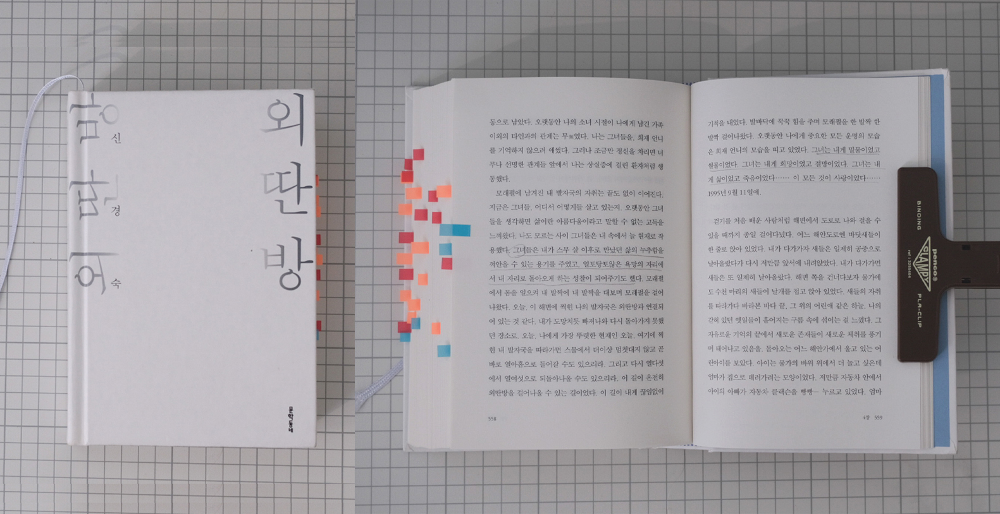

신경숙 『외딴방』

Notes
장편 하나 추천을 부탁드려도 될까요, 하는 말에 고민도 없이 신경숙 작가의 외딴방 읽어보셨을까요, 물어왔다. 삼십년도 더 된 소설을? 이라고 생각하던 중에 책방지기의 말. “혜진님 분명 좋아하실 거예요”
오래 살아남아 고전이 된 책 앞에서 으레 갖는 편견 같은 것이 이 소설에도 있었다. 그러나. 오래 살아남아 고전이 된 책들이 응당 그러하듯 읽기를 잘했다는 생각이 든다. 2025년의 끝과 2026년의 시작을 이 소설과 함께 했다. 서른둘의 ‘내’가 열여섯의 나, 소녀를 바라보며 생겨나는 감정과 통증을 함께 겪으면서. ‘너는 우리 얘기는 쓰지 않더구나, 부끄러워하는 건 아니니, 넌 우리들과 다른 삶을 사는 것 같더라’는 하계숙의 편지에 나도 괜히 얼굴이 화끈거리면서. 십육년이 지나도 화해되지 않았다는 그녀의 열여섯 열일곱 열여덟 열아홉.. 그 시간들을 끌어안아주는 마음으로. 함께 지나왔다. 그리고,
그녀와 나이도 이름도 같은 우리 엄마, 염경숙을 생각했다. 열 네살에 전라도 화순에서 부산의 공장으로 홀로 보내진 나의 경숙. 그녀의 열 네살을 생각했다. 무섭지는 않았을까, 어떤 얼굴의 사람들을 만났을까, 꿈이 뭐였을까, 무엇이 되고 싶었을까. 그러다가, 그 시절 이야기를 왜 내겐 들려주지 않았을까. 혹시 부끄러워하고 있으려나. 세월에 흘려 잊었나.. 그리고,
말로는 결코 흉내낼 수 없는 깊이와 아름다움을 지닌 문장들을 보았다. 글이 스스로의 형식을 믿고 나아갈 때 생겨나는 리듬과 시공간을 넘나들며 넘실거리는 문어체로서의 말맛을 느꼈다. 글이 말과는 다른 방식으로 우리를 설득하고 감동시킬 수 있다는 사실도 일깨웠고. 신경숙의 문장은 글이 가질 수 있는 침묵까지도 품고 있었다. 이것이 한 시대의 문학인지, 한 작가의 고유한 세계인지는 쉽게 가를 수 없지만. 소설 속에서도 언급된 것처럼 그녀의 글에는 ‘훼손되지 않은 우리 민족의 정서’가 있었다.
시대적인 비극은 멀리서 배경처럼 버티고 있고, 눈앞에서는 개인적인 비극이 닥쳐올 때 괜히 탓할 것들을 찾았던 것 같다. 왜그렇게 어린 그녀를 못살게 구는 지 세상이 미웠다. 그러다가도 한편 다행이라 안심했던 건 주변의 선한 이들 덕분이었다. 되려 독자인 내가 그들로부터 위로를 받고 용기를 얻은 것 같다. 책을 추천해주신 분에게도 고맙다는 말을 꼭 전하고 싶다. 너무나도 귀한 시간이었고 경험이었다.
Quotes
글쓰기, 내가 이토록 글쓰기에 마음을 매고 있는 것은, 이것으로만이, 나, 라는 존재가 아무것도 아니라는 소외에서 벗어날 수 있다고 생각하기 떄문은 아닌지. -18p
내 발바닥을 쇠스랑으로 찍어버렸던 열여섯에, 나는 생은 독한 상처로 이루어지는 거라는 걸 어렴풋이 느꼈다. 그 독함을 끌어안고 살아가기 위해서는 무엇인가 순결한 한 가지를 내 마음에 두지 않으면 안되겠다고. 그걸 믿고 의지하며 살아가야겠다고. 그러지 않으면 너무 외롭겠다고. 그저 살고 있다가는 다시 쇠스랑으로 또 발바다닥을 찍어버리겠다고. -25p
잘 있거라. 나의 고향. 나는 생을 낚으러 너를 떠난다. -29p
삶은 아름다운 것, 이라고만 했다. 아름다워서 우리에게 무엇을 줄 것인지, 아름다워서 우리에게 무엇을 앗아갈 것인지에 대해 그는 말하지 않는다. 다만 아름다운 것, 이라고 한다. -44p
그때는 그토록 먹는 게 문제여서, 그때의 큰 오빠는 우리에게 끊임없이 뭔가를 사먹이고 있다. 동사무소 앞 식당에서 콩나물국밥을 사먹이고 훈련원 매점에서 빵과 우유를 사먹이고, 자취방 앞에서 돼지갈비를 사먹인다….. 겨우, 스물셋의 청년이. 저도 동사무소 근무하랴, 밤에 학교 가랴, 정신이 없는 청년이. 외사촌이 먼저 기차 안으로 들어가자 열여섯 동생의 손에 돈을 쥐어준다. 집에 들어갈 때 아버지 담배 한 보루와 고기 한 근과 막냇동생에게 줄 과자를 사가라며. -61p
나는 끊임없이 어떤 순간들을 언어로 채집해서 한 장의 사진처럼 가둬놓으려고 하지만, 그럴수록 문학으로선 도저히 가까이 가볼 수 없는 삶이 언어 바깥에서 흐르고 있음을 절망스럽게 느끼곤 한다. -81p
손으로 뭘 만들 줄 아는 사람치고 나쁜 사람 없댔잖아요 .. 손으로 뭘 맨들 줄 아는 사람은 믿어도 된다고.-166p
열일곱의 나와 친해진 미소가 헤겔에 대해서 말한다. 이 책을 읽고 있을 때만 내가 너희들하고 다르게 느껴져. 나는 너희들이 싫어 -210p
설마 삶을 영화로 착각하고 있는 건 아니겠지? 삶이 직선으로 줄거리를 가질 수 있다고 생각하는 건 아니겠지? -216p
오빠. 문학을 생각할 때면 주인을 응시하는 개의 사무친 눈이 떠올라. 그 눈이 가진 운명의 아름다움을, 사랑을 섬기는 슬픔을, 보아선 안 될 것을 보아버린 침묵을. -269p
그의 진실은 내가 표현해볼 도리가 없는 그 속에 잠겨 있을지도 모르는 일인데도. -319p
내 손을 꼭 잡아 쥔 어린 조카의 손에 봄 땀이 뱄다. 거리의 버들이 낭창했고 먼산의 연둣빛이 순했다. -327p
어디에 가서 앉아야 할지 모를 어설픔이 남긴 마음의 상처. 세월이 이렇게 많이 흘러서도 사람 많은 곳에 가야 할 일이 생기면 맨 먼저 생각하게 되는 것. 그곳에 가면 내 자리는 있을까. 어설퍼질 것 같으면 그곳에 아예 가지 않는, 성장하길 멈춘 무의식. -337p
엄마는 집에서도, 생일을 맞은 가족이 멀리 있어도, 떡을 찌고 맑은 물을 받고 촛불을 켜두었다. -451p
풍속화 속의 고독의 날들 속에서 내가 자주 힘겹게 떠올린 건 도시로 나오던 그날 밤, 외사촌이 보여준 사진집 속의, 아득한 밤하늘 아래, 별을 향해 높고 아름답게 잠든 새들이 있었다. 나, 그들을 내 눈으로 보러 갈 날이 있을 것임을 힘겹게 나에게 기약하며 그 풍속화 속의 나날들을 살아내곤 했다. -539p
연년세세 잊지 않을 것이니 언젠가 다시 새로운 문장이 되어 돌아오렴. 돌아와서 내 숨결이 닿지 않는 곳에서 발생했다 사라진 진실을 들려주렴. 이제 우리 작별인사를 하자. 그땐 우리 변변히 작별인사도 못했으니. -540p
어디서든지 가던 길을 멈추고서 처음으로 돌아가려고 하는 나의 습성이 때로는 삶을 벗어난 허영인지도 모른다는 생각도 같이 든다. -542p
나는 침묵으로 내 소녀 시절을 묵살해버렸다. 스스로 사랑하지 못했던 시절이었으므로 나는 열다섯에서 갑자기 스물이 되어야 했다. -557p
그녀들은 내가 스무 살 이후로 만났던 삶의 누추함을 껴안을 수 있는 용기를 주었고, 얼토당토않은 욕망의 자리에서 내 자리로 돌아오게 하는 성찰이 되어주기도 했다. -558p